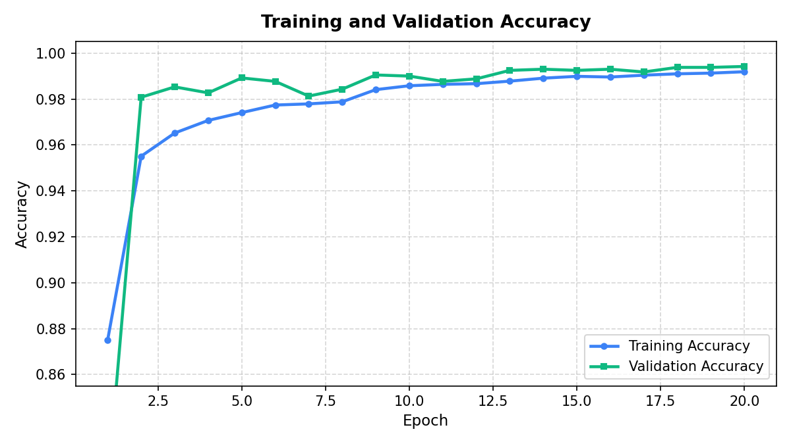
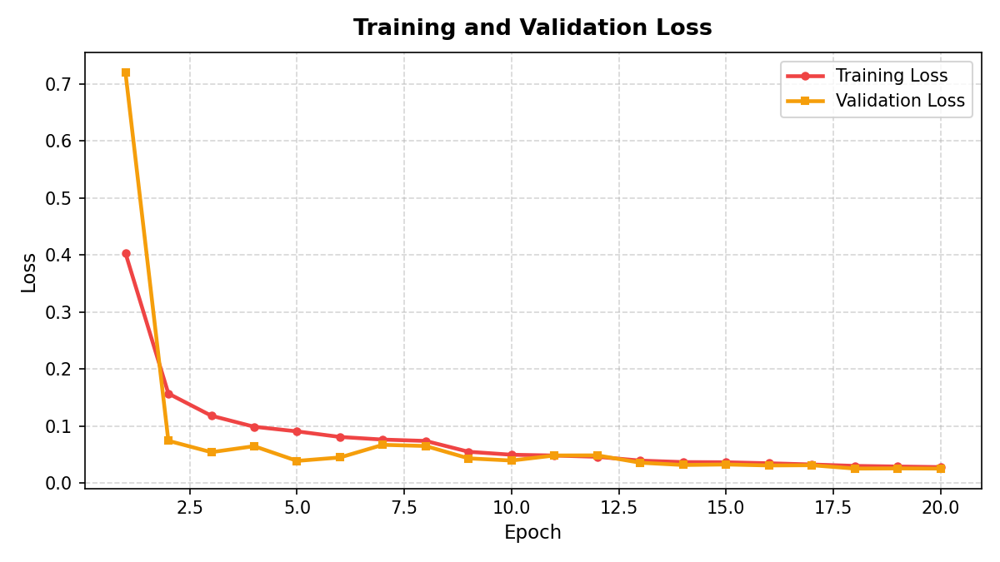
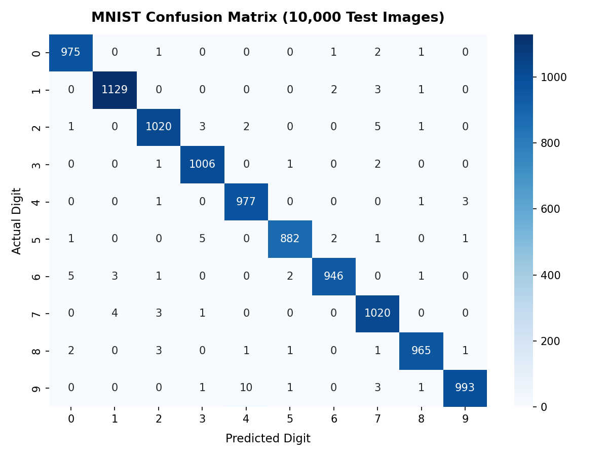

NEURAL INK
Draw a digit.
Watch the network understand it.
Where handwriting meets intelligence.
DRAW HERE
TRACKPAD / FREEHAND INPUT
LIVE ANALYSIS
MNIST SAMPLE
CLASS DISTRIBUTION
AWAITING INFERENCE
—
PREPROCESSED · CENTERED · [0, 1]
STAGE 01
RAW CANVAS
— —
RAW CANVAS — —
→
STAGE 02
BOUNDING BOX
— —
BOUNDING BOX — —
→
STAGE 03
ASPECT SCALED
— —
ASPECT SCALED — —
→
STAGE 04
CNN INPUT
— —
CNN INPUT — —
02
The Transformation
How your trackpad gesture becomes a neural input tensor.
STEP 01
Raw Stroke
Trackpad movement captured as white ink on a 300×300 black canvas.
↓
STEP 02
Grayscale Extraction
Alpha channel extracted. Background separated. Stroke isolated.
↓
STEP 03
Bounding + Centering
Tight crop to bounding box. Aspect-ratio preserved. Centered in a 28×28 field.
↓
STEP 04
Normalization
Pixel values mapped to [0, 1]. Reshaped to (1, 28, 28, 1) tensor. Ready for CNN.
↓
→ CNN
Neural Inference
Tensor enters the convolutional network.
03
The Network
A convolutional neural network trained on 60,000 MNIST handwritten digits.
IN
Input
28 × 28 × 1
C1
Conv2D
32 · 3×3 · ReLU
BN
Batch Norm
—
MP
Max Pool
2×2
C2
Conv2D
64 · 3×3 · ReLU
BN
Batch Norm
—
MP
Max Pool
2×2
C3
Conv2D
128 · 3×3 · ReLU
BN
Batch Norm
—
FL
Flatten
→ vector
D1
Dense
128 · ReLU
DO
Dropout
0.3
SM
Softmax
10 classes
DATASET
MNIST
FRAMEWORK
TensorFlow 2.x / Keras
TRAINING SAMPLES
60,000
TEST SAMPLES
10,000
TOTAL PARAMETERS
897,802
OPTIMIZER
Adam (lr=0.001)
LOSS FUNCTION
Sparse Cat. Crossentropy
EPOCHS
20
04
The Decision
The full inference pipeline — from your stroke to classification.
MODEL LENS
YOUR STROKE
Trackpad freehand input
↓
28 × 28 REPRESENTATION
Normalized grayscale tensor
↓
CONVOLUTION
3 layers · 32 → 64 → 128 filters
↓
FEATURE MAPS
Spatial patterns extracted
↓
CLASSIFICATION
Softmax → 10 probabilities
↓
PREDICTION
—
The Model, Measured.
MNIST TEST SET · 10,000 SAMPLES · EMPIRICAL
99.13%
MNIST TEST ACCURACY
0.0265
TEST LOSS
897,802
PARAMETERS
10
OUTPUT CLASSES
TRAINING CONVERGENCE
ACCURACY · 20 EPOCHS

LOSS CONVERGENCE
TRAIN & VAL LOSS

CLASS CONFUSION
10 × 10 · MNIST TEST SET

CLASSIFICATION PERFORMANCE
PRECISION · RECALL · F1
| CLASS | PRECISION | RECALL | F1-SCORE | SUPPORT |
|---|---|---|---|---|
| 0 | 99.09% | 99.49% | 99.29% | 980 |
| 1 | 99.38% | 99.47% | 99.43% | 1135 |
| 2 | 99.03% | 98.84% | 98.93% | 1032 |
| 3 | 99.02% | 99.60% | 99.31% | 1010 |
| 4 | 98.69% | 99.49% | 99.09% | 982 |
| 5 | 99.44% | 98.88% | 99.16% | 892 |
| 6 | 99.47% | 98.75% | 99.11% | 958 |
| 7 | 98.36% | 99.22% | 98.79% | 1028 |
| 8 | 99.38% | 99.08% | 99.23% | 974 |
| 9 | 99.50% | 98.41% | 98.95% | 1009 |
EXPERIMENTAL NOTE
MNIST benchmark performance reflects evaluation on the standard 10,000-sample MNIST test set.
Real-world trackpad handwriting may vary due to stroke thickness, positioning, scale, and individual writing style.
These metrics should be interpreted as in-distribution performance only.
ABOUT
About NEUROGLYPH
NEUROGLYPH is an interactive deep-learning system designed to explore how convolutional neural networks interpret handwritten numerical patterns.
INPUT
Trackpad-based handwritten stroke
MODEL
Convolutional Neural Network
DATASET
MNIST (60K train · 10K test)
OUTPUT
Digit classification 0 – 9
Technical Title
Trackpad-Based Handwritten Digit Recognition Using Convolutional Neural Network
Technology Stack
Python
TensorFlow 2.x
Keras
NumPy
Pillow
Flask
HTML5 Canvas
ACADEMIC NOTE
Built as an academic exploration of deep learning, image preprocessing, and human-computer interaction.
No claims of universal handwriting recognition accuracy beyond MNIST distribution.